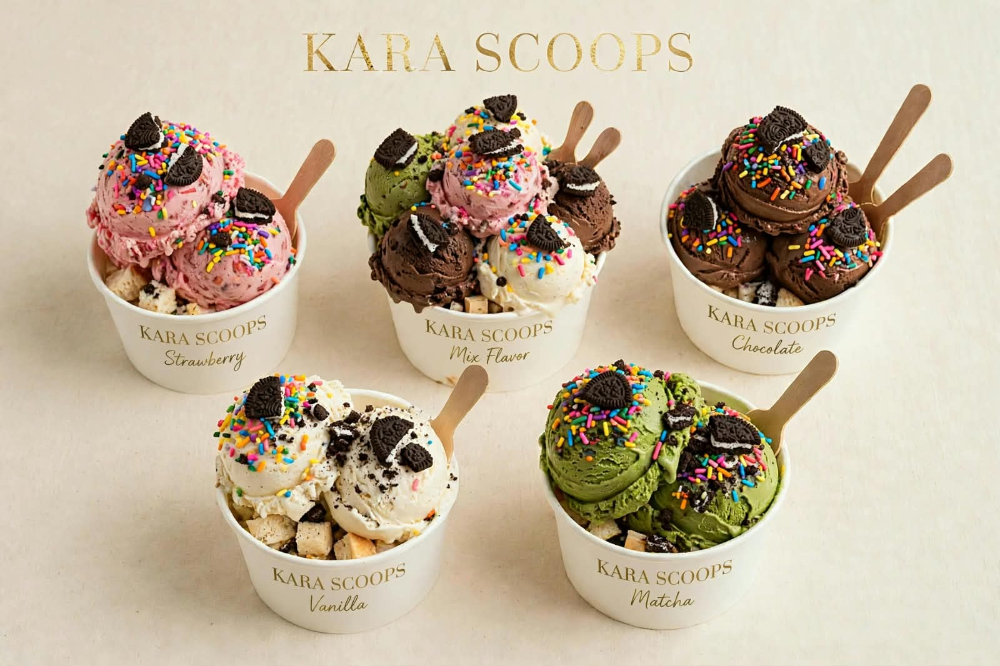

OUR STORY
The Story Behind Our Name
KARA SCOOPS merupakan usaha kuliner yang bergerak di bidang makanan, khususnya es krim cup.
Nama KARA diambil dari gabungan nama pemilik, yaitu Jesika Rahman. Kata KARA berasal dari gabungan suku kata "KA" pada nama Jesika dan "RA" pada nama Rahman.
Nama tersebut menjadi identitas personal sekaligus awal dari hadirnya KARA SCOOPS sebagai usaha yang menawarkan camilan manis dan menyenangkan.
KARA SCOOPS menghadirkan lima pilihan rasa, yaitu Chocolate, Vanilla, Strawberry, Matcha, dan Mixed Flavor. Setiap varian disajikan dalam cup untuk memberikan pengalaman menikmati es krim yang menyenangkan.